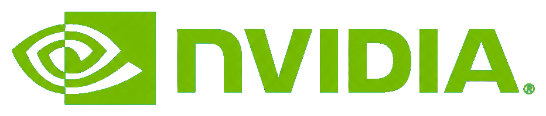
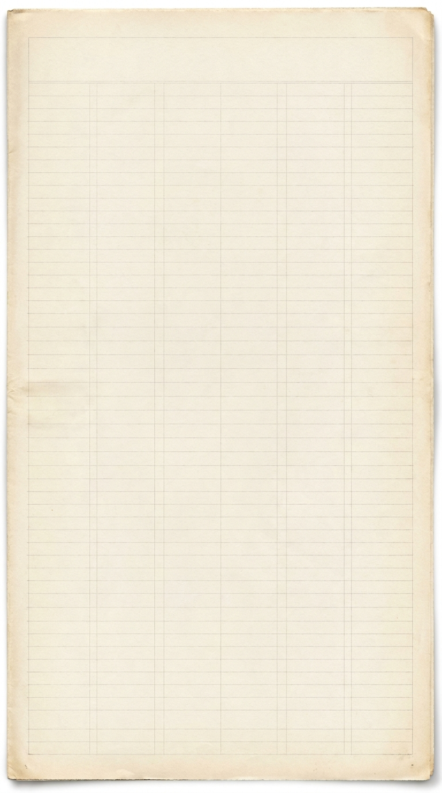
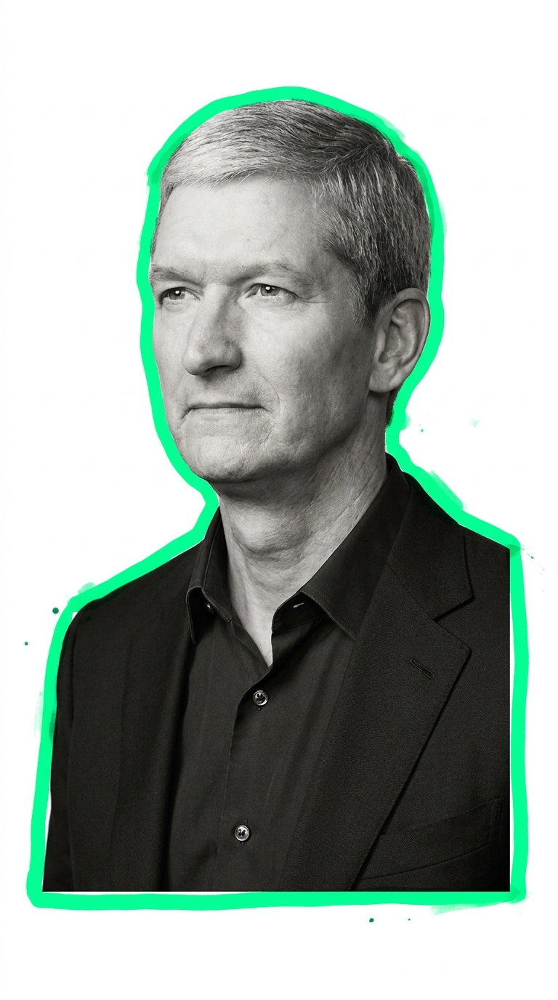

$18.97
+480%
NINE MONTHS
$18.97
AUG 1, 2025
Q2
LOSSES
$2.9 BILLION
LIP-BU TAN · CEO
−15%
WORKFORCE CUT
10%
STAKE
BREAKING
US TAKES 10% INTEL STAKE
·
·
$2B

$5B
CEO LIP-BU TAN · CUTS
EUROPE'S FABS
OHIO SLOWED
NO BLANK CHECKS.
Q1 2026 EARNINGS
+$1.2B
REVENUE BEAT
6TH STRAIGHT BEAT
DATA CENTER · Q1 2026
+22%
REVENUE GROWTH


RUNNING ON XEON 6

MAY 1, 2026
Apple in Talks to Make Chips at Intel
The Wall Street Journal

$113.01
ALL-TIME HIGH
+480% IN 9 MONTHS · INTC
BLOOM
FOR MORE INVESTING KNOWLEDGE